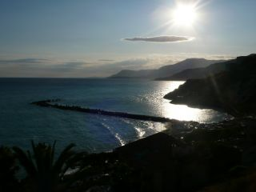
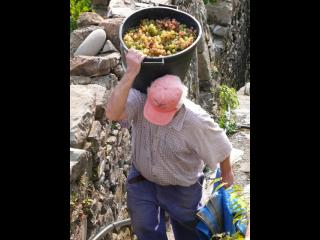
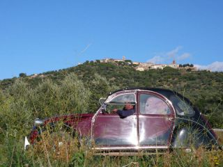
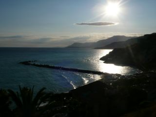
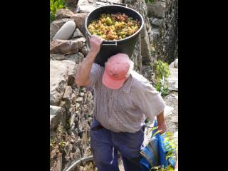
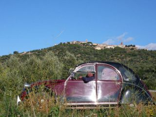

l'ITALIE
Thursday, August 13, 2009 2:20:53 PM
L'Italie...depuis qu'on se connaît, Hélène veut y aller et moi je me défile, sans trop savoir pourquoi. Ce coup-ci c'était sur notre route, pas de discution possible. Et bien chapeau, ce pays est tel qu'Hélène en rêvait et comme je ne l'imaginais pas, une merveille !

Quelques surprises en arrivant: Nous pensions le pays bon marché, les camping coutent 2 fois plus cher qu'en France et la nourriture est au même prix (sauf les pâtes Barilla qui sont données... ça tombe bien on en mange tous les soirs). On s'attendait à affronter les pires côtes de notre voyage européen... le point culminant de notre voyage reste pour l'instant la Bourgogne et ses 580m. On avait peur de se faire chourer les vélos, on touche du bois ils sont toujours là !

En traversant la frontière, nous n'avons pas eu le moindre mal du pays, on est aussi bien que chez nous avec des a et des o a la fin des mots... Paysages sublimes, spécialités goûteuses, vins gouleyants, patrimoine de fou et gens sympathiques. On a du mal à avancer avec la même conviction qu'avant, il nous faut tout voir et tout goûter... Aie aie aie il budgeto !

En cette fin de septembre le temps est magnifique et se prête bien au vélo comme aux visites, la lumière dorée transforme les villages que nous traversons en cartes postales et nous n'avons plus a faire de longues pauses à midi à cause de la chaleur. En contre-partie la nuit tombe maintenant assez vite et les soirées sont fraiches... une sorte de rappel amical de Dame Nature qu'il ne faut pas oublier d'avancer vers le Sud.

Les plages sont belles et l'eau toujours agréable mais elles sont envahies de sénégalais clandestins vendeur de contre-façons. C'est assez étrange, ils arrivent par groupe de 4/5 avec chacun une spécialité, faux sacs a main, faux habits, fausses montres, fausses lunettes, fausses sceptiques (bip bip!) et essayent absolument de te les fourguer (genre on a une tête à faire du vélo avec un sac à main en cuir Gucci...). On a discuté 5 minutes avec un groupe qui était en pause, ils étaient tous passés par Paris vendeurs sous la tour Eiffel, mais étaient partis pour cause de contrôles trop fréquents. C'est sur ici ça craint moins, on a même vu à Pise une manif de Sénégalais sans papiers avec tracts et mégaphones qui revendiquaient le droit de vendre des contre-façons sans se faire jeter de l'eau dessus par les commerçants italiens... Le tout encadré par les Carabinieri, faut oser quand même !
Nous croisons sur la route quelques personnalités sympathiques comme Jacky qui fait Marseille-Rome à pied en solo, quelques cyclotouristes en vadrouille venant de tout bord ou ce couple de retraités australiens qui nous a invités à leur rendre visite à Sydney en février prochain... C'est agréable de discuter 5 minutes avec des gens qui font des trucs marrants, ça donne des idées ;-)

Quelques surprises en arrivant: Nous pensions le pays bon marché, les camping coutent 2 fois plus cher qu'en France et la nourriture est au même prix (sauf les pâtes Barilla qui sont données... ça tombe bien on en mange tous les soirs). On s'attendait à affronter les pires côtes de notre voyage européen... le point culminant de notre voyage reste pour l'instant la Bourgogne et ses 580m. On avait peur de se faire chourer les vélos, on touche du bois ils sont toujours là !

En traversant la frontière, nous n'avons pas eu le moindre mal du pays, on est aussi bien que chez nous avec des a et des o a la fin des mots... Paysages sublimes, spécialités goûteuses, vins gouleyants, patrimoine de fou et gens sympathiques. On a du mal à avancer avec la même conviction qu'avant, il nous faut tout voir et tout goûter... Aie aie aie il budgeto !

En cette fin de septembre le temps est magnifique et se prête bien au vélo comme aux visites, la lumière dorée transforme les villages que nous traversons en cartes postales et nous n'avons plus a faire de longues pauses à midi à cause de la chaleur. En contre-partie la nuit tombe maintenant assez vite et les soirées sont fraiches... une sorte de rappel amical de Dame Nature qu'il ne faut pas oublier d'avancer vers le Sud.
Les plages sont belles et l'eau toujours agréable mais elles sont envahies de sénégalais clandestins vendeur de contre-façons. C'est assez étrange, ils arrivent par groupe de 4/5 avec chacun une spécialité, faux sacs a main, faux habits, fausses montres, fausses lunettes, fausses sceptiques (bip bip!) et essayent absolument de te les fourguer (genre on a une tête à faire du vélo avec un sac à main en cuir Gucci...). On a discuté 5 minutes avec un groupe qui était en pause, ils étaient tous passés par Paris vendeurs sous la tour Eiffel, mais étaient partis pour cause de contrôles trop fréquents. C'est sur ici ça craint moins, on a même vu à Pise une manif de Sénégalais sans papiers avec tracts et mégaphones qui revendiquaient le droit de vendre des contre-façons sans se faire jeter de l'eau dessus par les commerçants italiens... Le tout encadré par les Carabinieri, faut oser quand même !
Nous croisons sur la route quelques personnalités sympathiques comme Jacky qui fait Marseille-Rome à pied en solo, quelques cyclotouristes en vadrouille venant de tout bord ou ce couple de retraités australiens qui nous a invités à leur rendre visite à Sydney en février prochain... C'est agréable de discuter 5 minutes avec des gens qui font des trucs marrants, ça donne des idées ;-)